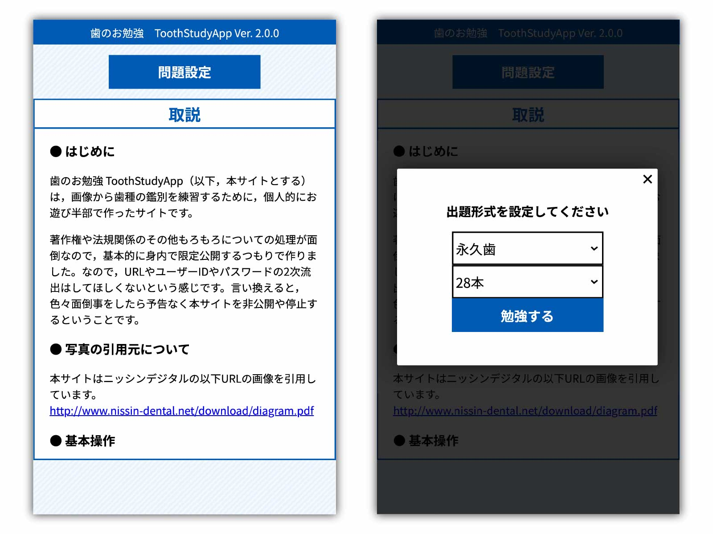
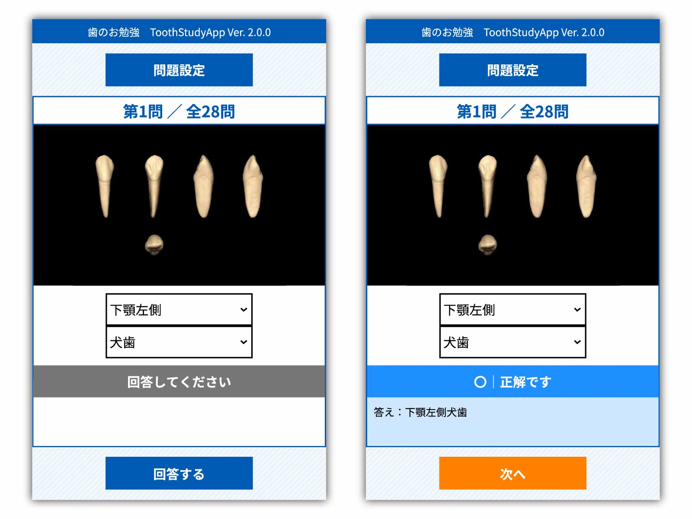
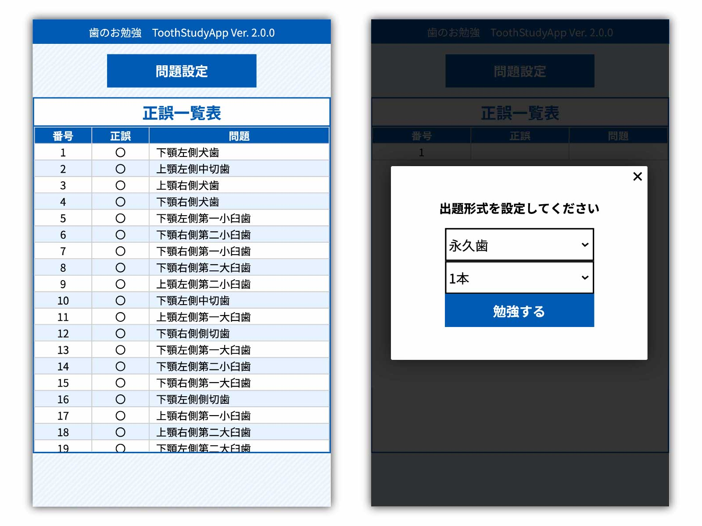
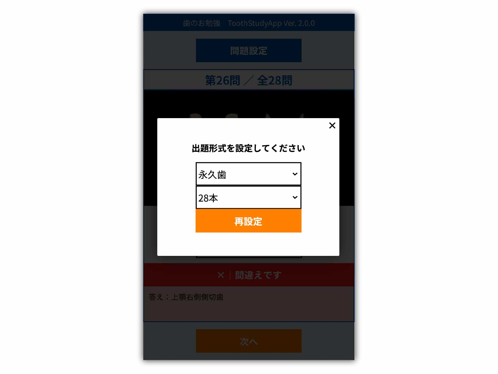
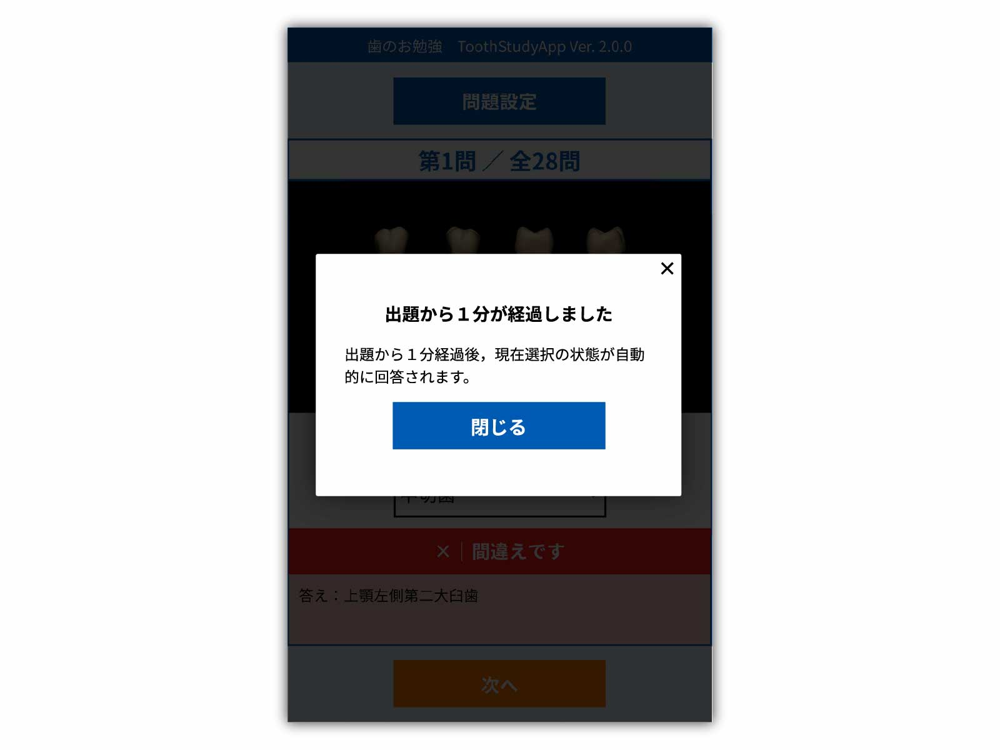

このサイトの取説
● はじめに
歯のお勉強（以下，本サイトとする）は，画像から歯種の鑑別を練習するために，有志で作ったサイトです。
予告なく本サイトを非公開や停止する場合もあるということですです。
近年著作権が厳しくなっていますが，このサイトは画像を引用しています。（引用元は以下に記載。）「引用」とは，他人が作った著作物を，自分の表現物（コンテンツ）に取り入れることをいいます。
引用といえば文章というイメージかもしれませんが，画像や動画も引用することが可能となっています。
さて，先ほども説明したように，著作物の無断利用は原則として違法になりますが，「引用」が成立する場合には，他人の著作物を無断で利用する場合でも，違法になりません。
「引用」という例外が認められる理由は，人が何かを主張したり批判するなど，自由な言論のためには他人の著作物を用いる必要性の高い場面がたくさんあるため，利用を制限しすぎるのは問題だからです。
例えば，何か自論を展開しようとしたときなど、その根拠として誰かの文章を引用すれば，より説得力や信頼度が増しますよね。これに応えたものが「引用」のルールなのです。
・そして，「引用」が認められるためには、次の条件をすべてみたす必要があります。
・主従関係が明確であること（明確性）
・引用部分が他とはっきりと区別されていること（明瞭区別性）
・引用をする必要性があること（必要性）
・出典元が明記されていること（出典）
・改変しないこと
上記を踏まえて，このサイトは引用を経て公開を行っています。
● 写真の引用元について
本サイトはニッシンデジタルの以下URLの画像を引用しています。 http://www.nissin-dental.net/download/diagram.pdf
● 基本操作
練習を開始するには上部の［問題設定］ボタンを押し，歯種，練習する本数を選択し，［勉強する］ボタンを押してください。

［勉強する］ボタンを押した後，回答画面が表示されます。プルダウンタブより上下左右顎，歯種を選択して［回答する］ボタンを押してください。［回答する］ボタンを押した後，問題の正誤が表示されます。次の問題に行く場合はオレンジ色で表示される［次へ］ボタンを押してください。

全問題終了後は正誤一覧表が表示されます。再び練習する場合は上部の［問題設定］ボタンを押し，歯種，練習する本数を選択し，［勉強する］ボタンを押してください。
● 途中変更
回答中に歯種，練習する本数を変更する場合は，上部の［問題設定］ボタンを押し，歯種，練習する本数を選択し，オレンジ色の［再設定］ボタンを押してください。
● 仕様について
出題から１分経過後，回答が完了していない場合は，その時点での選択状態が自動的に回答され，次の問題に進みます。
毎度の設定で問題はランダムに出題されます。ただし問題は重複はしません。
大体の機器に表示が合うように，レスポンシブ表示対応しています。
当たり前ですが，間違えがあったりバグが取り切れていないかもしれません。その他いろいろな細かいツッコミは禁止で。
● 鑑別の順番
永久歯/入試の区別→歯種の区別→上下の区別→歯種内の順位
● 鑑別の裏技
上顎の歯を舌側面または、咬合面からみた「近心」の存在する「左・右」の位置は、その歯の「左・右」側に一致 (ex:上顎第一小臼歯を咬合面から見たとき近心が左側にある場合は左側の歯である。
下顎の歯を舌側面または、咬合面からみた「遠心」の存在する「左・右」の位置は、その歯の「左・右」側に一致 (ex:下顎中側切歯を咬合面から見たとき遠心が右側にある場合は右側の歯である。
● 更新履歴
Ver. 2.0.0 2021/07/15 大規模改修 Ver. 1.4.0 2021/07/07 回答開始１分後自動遷移機能追加 Ver. 1.3.7 2021/07/05 一部修正 Ver. 1.3.6 2021/06/29 説明文変更 Ver. 1.3.5 2021/06/02 一部表示変更 Ver. 1.3.0 2021/06/02 画像対応 Ver. 1.2.5 2021/05/21 一部表示変更 Ver. 1.2.0 2021/05/18 画像問題対応化 Ver. 1.1.5 2021/05/17 乳歯対応化 Ver. 1.1.0 2021/05/16 CSS作成。永久歯のみ Ver. 1.0.0 2021/05/15 新規作成・初版リリース
Copyright © 2021 NUSDM GAKUSEI-KAI All Rights Reserved.